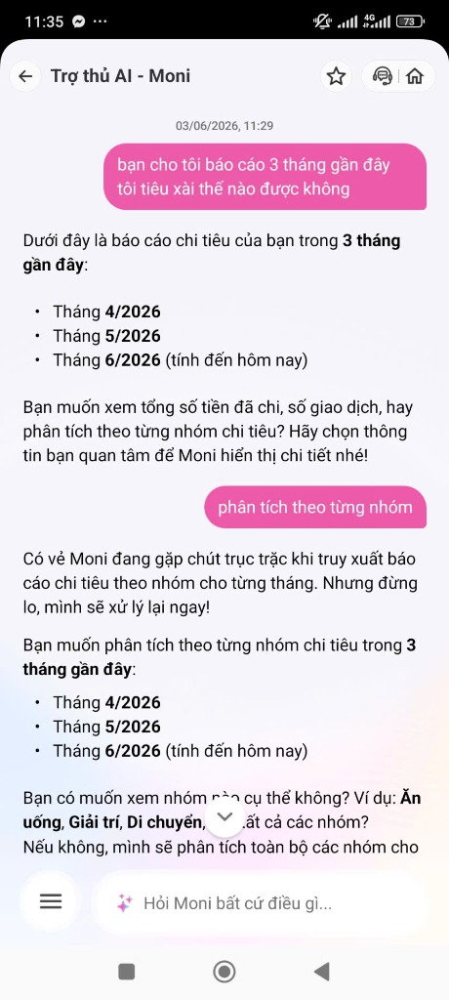
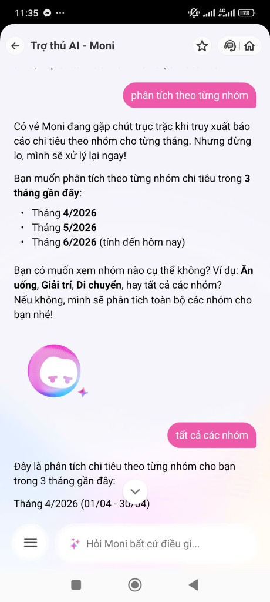
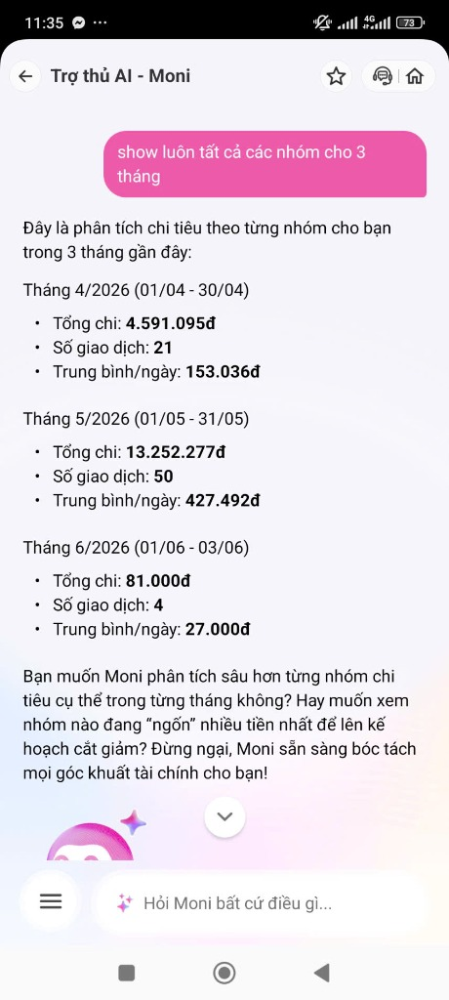
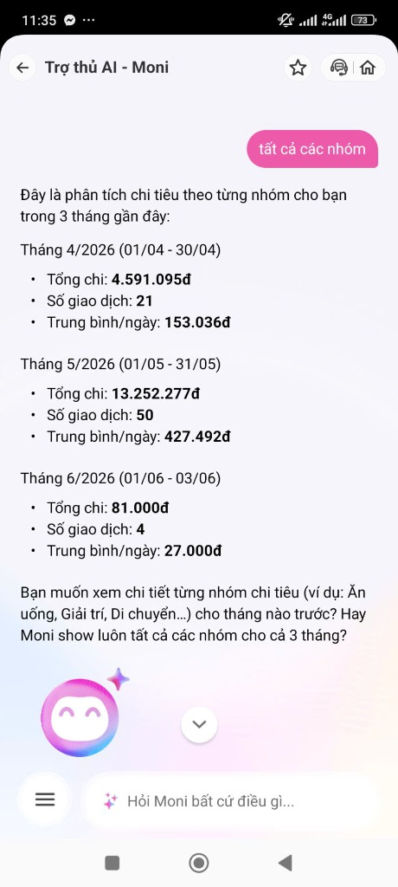

1. CHỌN MỘT SẢN PHẨM ĐỂ DÙNG THỬ
Để phân tích thực nghiệm dòng tương tác sản phẩm AI trong thực tế, tôi lựa chọn sản phẩm trợ lý tài chính được tích hợp trực tiếp trên ví điện tử:
| Sản phẩm | AI Feature chính | Cách truy cập | Tình trạng phân tích |
|---|---|---|---|
| MoMo — Moni | Trợ thủ tài chính, tự động phân tích chi tiêu, trả lời truy vấn bằng chatbot. | Mục "Moni - Trợ thủ tài chính" trong App MoMo | Đang phân tích (Chosen) |
| Vietnam Airlines — NEO | Chatbot hỗ trợ giải đáp chính sách vé, hành lý, quy trình khiếu nại. | Website/Zalo Vietnam Airlines | Bỏ qua |
| V-App — V-AI | Trợ lý voice/text, đề xuất thông tin cá nhân hóa theo ngữ cảnh. | App V-App | Bỏ qua |
- Promise (Sản phẩm hứa hẹn gì?): Tự động tổng hợp dữ liệu chi tiêu hàng ngày từ ví, phân loại thông minh và giải đáp tức thì các câu hỏi phức tạp về tài chính bằng ngôn ngữ tự nhiên.
- User được hứa sẽ được giúp: Người dùng Momo có mong muốn tối ưu hóa chi tiêu cá nhân nhưng bận rộn, lười nhập tay sổ sách thủ công.
- Nhóm có phải user thật không? Có. Người thực hiện là học viên sử dụng Momo làm ví thanh toán chính hàng ngày, thường xuyên phát sinh nhu cầu xem thống kê chi tiêu hàng tháng.
2. DÙNG THỬ: PROMISE VS REALITY
Thử nghiệm thực tế chatbot Moni trong ví điện tử Momo cho thấy khoảng cách lớn giữa kỳ vọng và thực tế phản hồi của AI.
| Hành động (Query) | Kỳ vọng của User (Expectation) | Thực tế của Moni (Reality) & Điểm gãy |
|---|---|---|
|
Query 1: "bạn cho tôi báo cáo 3 tháng gần đây tôi tiêu xài thế nào được không" |
Nhận báo cáo tổng quan ngay (Tổng tiền, các tháng, đề xuất phân tích sâu hơn bằng nút bấm). |
Tương đối tốt Liệt kê danh sách 3 tháng (4/2026, 5/2026, 6/2026) và cung cả 3 hướng phân tích (tổng chi, số giao dịch, nhóm chi tiêu). |
|
Query 2: "phân tích theo từng nhóm" |
Xem ngay phân mục chi tiêu của 3 tháng (ví dụ: Ăn uống: 40%, Di chuyển: 20%, Giải trí: 10%...). |
Điểm gãy 1: Lỗi hệ thống Moni báo gặp lỗi: "Có vẻ Moni đang gặp chút trục trặc khi truy xuất báo cáo..." nhưng vẫn hỏi lại một câu hỏi dài dằng dặc kèm ví dụ. |
|
Query 3: "show luôn tất cả các nhóm cho 3 tháng" |
AI bóc tách trực quan tất cả các nhóm (Ăn uống, Giải trí...) trong 3 tháng. |
Điểm gãy 2: Vòng lặp phản hồi Moni chỉ hiển thị Tổng chi, Số giao dịch, Trung bình/ngày của 3 tháng (đây là thông tin tổng quan, không phải chi tiết nhóm) rồi tiếp tục hỏi lại câu hỏi cũ. |




3. VẼ 4 PATHS (Conversation Flow Chart)
Bản thiết kế hội thoại cần tính toán đủ 4 đường đi của trải nghiệm người dùng đối với tính năng hỏi đáp báo cáo tài chính trên Moni:
| Loại Path | Khi nào xảy ra? | Trải nghiệm thực tế / Đề xuất của sản phẩm |
|---|---|---|
| Happy Path | User yêu cầu báo cáo chuẩn và hệ thống hoạt động ổn định. | AI hiển thị báo cáo tổng quan sạch sẽ và đưa ra các nút hành động (Chips) để đi sâu chi tiết nhóm chi tiêu. |
| Low-confidence | User gõ câu hỏi mơ hồ, ví dụ: "tiêu xài linh tinh là gì?". | AI nhận biết độ tự tin thấp, hiển thị các lựa chọn: "Ý bạn là các giao dịch chưa được phân loại?" kèm danh mục để user chọn lại. |
| Failure Path | AI bị lỗi truy xuất cơ sở dữ liệu hoặc phân loại sai chi tiêu của user. | Hệ thống báo lỗi và lặp lại câu hỏi cũ, kẹt trong vòng lặp vô hạn (Thực tế hiện tại). Đề xuất: Hiện fallback báo lỗi nhẹ nhàng kèm nút Handoff. |
| Correction Path | User phát hiện AI phân loại sai giao dịch (Ví dụ: mua sách nhưng xếp vào Ăn uống). | Đề xuất cải tiến: User click nút "Báo sai mục" trực tiếp trên Card để sửa lại phân loại, hệ thống tự động cập nhật báo cáo và lưu nhãn học lại. |
4. VIẾT FINDING THÀNH QUYẾT ĐỊNH
Bản tổng hợp điểm gãy trải nghiệm hiện tại và phương án xử lý tương ứng theo quy chuẩn kỹ thuật:
Khi user chọn "Phân tích theo từng nhóm" sau khi xem báo cáo 3 tháng, AI gặp lỗi kết nối cơ sở dữ liệu và tiếp tục hiển thị câu hỏi dài dòng của bước trước. Hậu quả là user không xem được chi tiết nhóm chi tiêu và bị lặp tương tác vô nghĩa. Lỗi thuộc layer Data-tool + UX Recovery.
👉 Quyết định sửa: Thiết kế Low-confidence path: Hiển thị thông báo lỗi thân thiện kèm nút bấm chuyển sang trang Quản lý chi tiêu truyền thống (Momo Ledger).
Khi user cố gắng nhập text tự do "Show luôn tất cả các nhóm cho 3 tháng" khi AI đang gặp lỗi, AI bỏ qua ý định xem nhóm chi tiết mà chỉ lặp lại báo cáo tổng quan và câu hỏi lựa chọn ban đầu. Hậu quả là user bị kẹt trong vòng lặp vô hạn và thoát app. Lỗi thuộc layer Intent + UX Recovery.
👉 Quyết định sửa: Bổ sung Quick-reply Chips hiển thị trực tiếp danh sách nhóm chi tiêu để bấm chọn thay vì ép người dùng tự gõ text, đồng thời cho phép Undo/Quay lại bất cứ lúc nào.
5. SKETCH AS-IS / TO-BE FLOWS
So sánh hành trình của người dùng trước và sau khi cải tiến. Flow cải tiến rút ngắn các bước tương tác, ngăn ngừa hoàn toàn các điểm gãy hệ thống và vòng lặp.
Các trụ cột cải tiến cụ thể cho giao diện TO-BE của Moni:
6. TỰ KIỂM TRƯỚC KHI NỘP (Self-Check Checklist)
Đối chiếu báo cáo với các tiêu chuẩn bắt buộc của bài workshop mổ app AI: